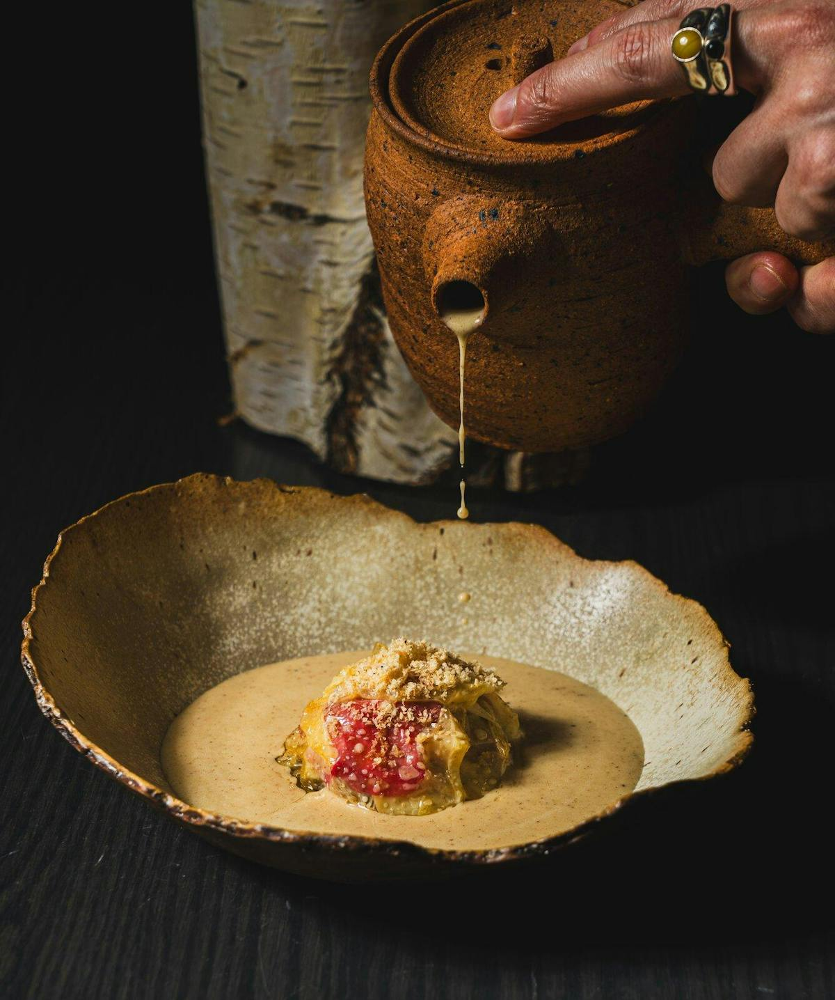

A restaurant built
around fermentation

Antheia is the newer of the two, and the more obviously singular. The entire restaurant is built around fermentation — not as a garnish or a technique borrowed for one course, but as the organizing idea behind everything that leaves the kitchen. Ingredients are cured, preserved, and aged for months before they ever reach a plate, and the sixteen-seat counter puts guests close enough to watch that process happen rather than simply hearing about it secondhand.
The restaurant arrived with unusually high expectations attached to it. Chef Briana Kim closed her celebrated Little Italy restaurant Alice at what was arguably its peak, then spent nearly two years developing something more deliberate in its place — a kitchen built from the ground up around a fermentation programme, rather than one that simply found room for it. That patience shows in the food. Nothing here feels rushed into being interesting; it feels like it had time to become genuinely itself.
What makes Antheia worth the drive isn't novelty. Plenty of restaurants lean on fermentation as a talking point, a single dish deployed for effect. Antheia has built an entire culinary philosophy around it, with a level of control and follow-through that isn't really replicable anywhere else in the city — and arguably not in very many other cities either. That combination is difficult to reproduce elsewhere, and not simply because fermentation takes patience. It requires a kitchen built specifically to support months-long timelines, a chef willing to walk away from an already-successful restaurant to build it, and a menu structured entirely around ingredients that can't be rushed toward a deadline. Most restaurants don't have the luxury of that kind of runway. Antheia was built around having it.